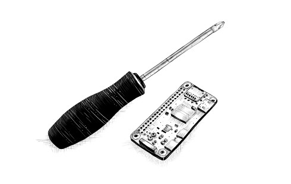

}
مقدمة
**نعتقد أننا نبني النظام لأغراضنا الخاصة. نعتقد أننا نصنعه على صورتنا... لكن الحاسوب ليس مثلنا حقاً. إنه انعكاس لجزء ضئيل جداً من أنفسنا: ذلك الجزء المكرس للمنطق والترتيب والقواعد والوضوح.
**
— إلين أولمان, قريب من الآلة: التقنية وما يصاحبها من استياء

}
هذا كتاب عن تعليم الحواسيب. الحواسيب شائعة اليوم مثل المفكات، لكنها أكثر تعقيداً بكثير، وجعلها تفعل ما تريد ليس دائماً سهلاً.
إذا كانت المهمة التي تريد القيام بها على الحاسوب شائعة ومفهومة جيداً، مثل عرض بريدك الإلكتروني أو العمل كآلة حاسبة، يمكنك فتح التطبيق المناسب والبدء في العمل. لكن بالنسبة للمهام الفريدة أو المفتوحة، غالباً لا يوجد تطبيق مناسب.
وهنا يأتي دور البرمجة. البرمجة (programming) هي عملية بناء برنامج (program)—مجموعة من التعليمات الدقيقة التي تخبر الحاسوب بما يجب فعله. نظراً لأن الحواسيب آلات غبية ومتشددة، فإن البرمجة تكون مملة ومُحبطة في الأساس.
لحسن الحظ، إذا استطعت تجاوز هذه الحقيقة—وربما حتى الاستمتاع بصرامة التفكير بطريقة يمكن للآلات الغبية التعامل معها—فإن البرمجة يمكن أن تكون مجزية. إنها تتيح لك القيام بأشياء في ثوانٍ كانت ستستغرق (للأبد) يدوياً. إنها طريقة لجعل أداة الحاسوب تفعل أشياء لم تستطع فعلها من قبل. فوق ذلك، إنها لعبة رائعة لحل الألغاز والتفكير المجرد.
يتم معظم البرمجة باستخدام لغات البرمجة. لغة البرمجة (programming language) هي لغة مُنشأة بشكل اصطناعي تُستخدم لتوجيه الحواسيب. من المثير أن أكثر الطرق فعالية التي وجدناها للتواصل مع الحاسوب تستعير بكثافة من الطريقة التي نتواصل بها مع بعضنا البعض. مثل اللغات البشرية، تسمح لغات الحاسوب بدمج الكلمات والعبارات بطرق جديدة، مما يجعل التعبير عن المفاهيم الجديدة ممكناً.
في مرحلة ما، كانت الواجهات القائمة على اللغة، مثل BASIC وDOS في الثمانينيات والتسعينيات، هي الطريقة الرئيسية للتفاعل مع الحواسيب. بالنسبة للاستخدام الروتيني للحاسوب، تم استبدال هذه إلى حد كبير بواجهات مرئية، وهي أسهل في التعلم لكنها توفر حرية أقل. لكن إذا كنت تعرف أين تبحث، فإن اللغات لا تزال موجودة. إحداها، جافاسكريبت (JavaScript)، مُدمجة في كل متصفح ويب browser حديث—وهي متاحة تقريباً على كل جهاز.
هذا الكتاب سيحاول أن يجعلك مألوفاً بما يكفي مع هذه اللغة لتقوم بأشياء مفيدة ومسلية بها.
عن البرمجة
إلى جانب شرح جافاسكريبت (JavaScript)، سأقدم المبادئ الأساسية للبرمجة. البرمجة، اتضح، صعبة. القواعد الأساسية بسيطة وواضحة، لكن البرامج المبنية على هذه القواعد تميل إلى أن تصبح معقدة بما يكفي لإدخال قواعد ومركبات خاصة بها. أنت تبني متاهتك الخاصة، بطريقة ما، ويمكنك بسهولة أن تضل فيها.
سيكون هناك أوقات يشعر فيها قراءة هذا الكتاب بإحباط شديد. إذا كنت جديداً على البرمجة، سيكون هناك الكثير من المواد الجديدة للاستيعاب. سيتم دمج الكثير من هذه المواد بطرق تتطلب منك إجراء اتصالات إضافية.
الأمر متروك لك لبذل الجهد اللازم. عندما تكافح لمتابعة الكتاب، لا تقفز إلى أي استنتاجات حول قدراتك. أنت بخير—أنت فقط بحاجة للاستمرار. خذ استراحة، أعد قراءة بعض المواد، وتأكد من أنك تقرأ وتفهم البرامج المثال والتمارين. التعلم عمل شاق، لكن كل ما تتعلمه هو ملكك وسيجعل التعلم اللاحق أسهل.
**عندما يصبح العمل غير مربح، اجمع المعلومات؛ عندما تصبح المعلومات غير مربحة، نام.
**
— أورسولا لي جين, اليد اليسرى للظلام
البرنامج (program) أشياء كثيرة. إنه قطعة من النص كتبها المبرمج، إنه القوة الموجهة التي تجعل الحاسوب يفعل ما يفعله، إنه بيانات في ذاكرة الحاسوب، وفي نفس الوقت، يتحكم في الإجراءات المُنفذة على هذه الذاكرة. التشبيهات التي تحاول مقارنة البرامج بأشياء مألوفة تميل إلى أن تفشل. تشبيه سطحي مناسب هو مقارنة البرنامج بآلة—هناك الكثير من الأجزاء المنفصلة عادة، ولجعل الشيء بأكمله يعمل، علينا أن نفكر في الطرق التي ترتبط بها هذه الأجزاء وتساهم في عمل الكل.
الـ حاسوب هو آلة مادية تتصرف كمضيف لهذه الآلات غير المادية. الحواسيب بحد ذاتها يمكنها فقط القيام بأشياء بسيطة بغباء. السبب في أنها مفيدة جداً هو أنها تقوم بهذه الأشياء بـ سرعة لا تصدق. يمكن لبرنامج أن يجمع ببراعة عدداً هائلاً من هذه الإجراءات البسيطة للقيام بأشياء معقدة جداً.
البرنامج هو بناء للفكر. إنه لا يكلف شيئاً للبناء، لا وزن له، وينمو بسهولة تحت أيدينا أثناء الكتابة. لكن مع نمو البرنامج، تنمو تعقيده أيضاً. مهارة البرمجة هي مهارة بناء برامج لا تربك المبرمج. أفضل البرامج هي تلك التي تدير أن تفعل شيئاً مثيراً بينما تظل سهلة الفهم.
يعتقد بعض المبرمجين أن هذا التعقيد يُدار بشكل أفضل باستخدام مجموعة صغيرة فقط من التقنيات المفهومة جيداً في برامجهم. لقد وضعوا قواعد صارمة ("أفضل الممارسات") تصف الشكل الذي يجب أن يكون عليه البرنامج ويبقون بعناية ضمن منطقتهم الآمنة الصغيرة.
هذا ليس مملاً فقط—إنه غير فعال. المشاكل الجديدة غالباً ما تتطلب حلولاً جديدة. مجال البرمجة صغير ولا يزال يتطور بسرعة، وهو متنوع بما يكفي لاحتواء مناهج مختلفة جداً. هناك أخطاء رهيبة كثيرة يمكن ارتكابها في تصميم البرنامج، ويجب أن تمضي قدماً وت committingها مرة واحدة على الأقل حتى تفهمها. الإحساس بكيفية شكل البرنامج الجيد يُطور بالممارسة، لا يُتعلم من قائمة قواعد.
لماذا تهم اللغة
في البداية، في ميلاد الحوسبة، لم تكن هناك لغات برمجة. كانت البرامج تبدو شيئاً مثل هذا:
00110001 00000000 00000000
00110001 00000001 00000001
00110011 00000001 00000010
01010001 00001011 00000010
00100010 00000010 00001000
01000011 00000001 00000000
01000001 00000001 00000001
00010000 00000010 00000000
01100010 00000000 00000000
هذا برنامج لجمع الأرقام من 1 إلى 10 معاً وطباعة النتيجة: 1 + 2 + ... + 10 = 55. يمكن أن يعمل على آلة بسيطة افتراضية. لبرمجة الحواسيب المبكرة، كان من الضروري ضبط مصفوفات كبيرة من المفاتيح في الموضع الصحيح أو ثقب ثقوب في شرائط من الورق المقوى وإطعامها للحاسوب. يمكنك أن تتخيل كم كانت هذه العملية مملة وعرضة للأخطاء. حتى كتابة برامج بسيطة تطلب الكثير من الذكاء والانضباط. البرامج المعقدة كانت شبه مستحيلة.
بالطبع، إدخال هذه الأنماط الغامضة من البتات (الأصفار والآحاد) يدوياً أعطى المبرمج شعوراً عميقاً بأنه ساحر عظيم. وهذا يستحق شيئاً من حيث الرضا الوظيفي.
كل سطر من البرنامج السابق يحتوي على تعليمة واحدة. يمكن كتابتها بالإنجليزية هكذا:
- خزن الرقم 0 في موقع الذاكرة 0.
- خزن الرقم 1 في موقع الذاكرة 1.
- خزن قيمة موقع الذاكرة 1 في موقع الذاكرة 2.
- اطرح الرقم 11 من القيمة في موقع الذاكرة 2.
- إذا كانت القيمة في موقع الذاكرة 2 هي الرقم 0، استمر بالتعليمة 9.
- أضف قيمة موقع الذاكرة 1 إلى موقع الذاكرة 0.
- أضف الرقم 1 إلى القيمة في موقع الذاكرة 1.
- استمر بالتعليمة 3.
- أخرج قيمة موقع الذاكرة 0.
على الرغم من أن هذا أكثر قابلية للقراءة من حساء البتات، إلا أنه لا يزال غامضاً إلى حد ما. استخدام أسماء بدلاً من أرقام للتعليمات ومواقع الذاكرة يساعد.
ضبط "total" إلى 0.
ضبط "count" إلى 1.
[loop]
ضبط "compare" إلى "count".
طرح 11 من "compare".
إذا كان "compare" يساوي 0، استمر في [end].
إضافة "count" إلى "total".
إضافة 1 إلى "count".
استمر في [loop].
[end]
إخراج "total".
هل يمكنك أن ترى كيف يعمل البرنامج عند هذه النقطة؟ السطرين الأولين يعطيان موقعي ذاكرة قيمهما الابتدائية: سيتم استخدام total لبناء نتيجة الحساب، وسيتتبع count الرقم الذي ننظر إليه حالياً. الأسطر التي تستخدم compare هي ربما الأكثر إرباكاً. البرنامج يريد أن يرى ما إذا كان count يساوي 11 ليقرر ما إذا كان يمكنه التوقف عن التشغيل. لأن آلة الافتراضية البدائية لدينا يمكنها فقط اختبار ما إذا كان الرقم صفراً واتخاذ قرار بناءً على ذلك، فإنها تستخدم موقع الذاكرة المُسمى compare لحساب قيمة count - 11 وتتخذ قراراً بناءً على تلك القيمة.
إليك نفس البرنامج في جافاسكريبت (JavaScript):
// إنشاء متغيرات (variables) لتخزين المجموع والعداد
let total = 0, count = 1;
// حلقة تكرار (while loop) لجمع الأرقام من 1 إلى 10
while (count <= 10) {
// إضافة قيمة العداد للمجموع
total += count;
// زيادة العداد بمقدار 1
count += 1;
}
// طباعة النتيجة للكونسول (console.log)
console.log(total);
// → 55
هذه النسخة تعطينا تحسينات إضافية. الأهم من ذلك، لا حاجة لتحديد الطريقة التي نريد للبرنامج أن يقفز ذهاباً وإياباً بعد الآن—بنية while (حلقة التكرار) تهتم بذلك. إنها تستمر في تنفيذ الكتلة (المغلفة بأقواس) أسفلها طالما أن الشرط المُعطى صحيح. ذلك الشرط هو count <= 10، والذي يعني "العداد أقل من أو يساوي 10". لم نعد بحاجة لإنشاء قيمة مؤقتة ومقارنتها بالصفر، والتي كانت مجرد تفصيل غير مثير للاهتمام. جزء من قوة لغات البرمجة هو أنها يمكن أن تهتم بالتفاصيل غير المثيرة بالنسبة لنا.
في نهاية البرنامج، بعد أن تنتهي بنية while، تُستخدم عملية console.log (طباعة للكونسول) لكتابة النتيجة.
أخيراً، إليك كيف يمكن أن يبدو البرنامج إذا كان لدينا العمليات الملائمة range (نطاق) و sum (مجموع) متاحة، والتي تُنشئ على التوالي مجموعة من الأرقام ضمن نطاق وتحسب مجموع مجموعة من الأرقام:
// حساب مجموع (sum) نطاق (range) الأرقام من 1 إلى 10
console.log(sum(range(1, 10)));
// → 55
الدرس المستفاد من هذه القصة هو أن نفس البرنامج يمكن التعبير عنه بطرق طويلة وقصيرة، غير قابلة للقراءة وقابلة للقراءة. النسخة الأولى من البرنامج كانت غامضة للغاية، بينما هذه الأخيرة شبه إنجليزية: سجل log المجموع sum للنطاق range من الأرقام من 1 إلى 10. (سنرى في الفصول اللاحقة كيفية تعريف عمليات مثل sum و range.)
لغة البرمجة (programming language) الجيدة تساعد المبرمج بالسماح لهم بالحديث عن الإجراءات التي يجب على الحاسوب أدائها على مستوى أعلى. إنها تساعد في حذف التفاصيل، وتقدم كتل بناء مريحة (مثل while و console.log)، تسمح لك بتعريف كتل البناء الخاصة بك (مثل sum و range)، وتجعل هذه الكتل سهلة التركيب.
ما هي جافاسكريبت؟
تم تقديم جافاسكريبت (JavaScript) في عام 1995 كطريقة لإضافة برامج لصفحات الويب في متصفح Netscape Navigator. لقد تم اعتماد اللغة منذ ذلك الحين من قبل جميع المتصفحات الرئيسية الأخرى. إنها جعلت تطبيقات الويب الحديثة ممكنة—أي التطبيقات التي يمكنك التفاعل معها مباشرة دون إعادة تحميل الصفحة لكل إجراء. يتم استخدام جافاسكريبت أيضاً في مواقع الويب التقليدية لتوفير أشكال مختلفة من التفاعل والذكاء.
من المهم ملاحظة أن جافاسكريبت (JavaScript) لا علاقة تقريباً بلغة البرمجة المسماة جافا (Java). الاسم المتشابه مستوحى من اعتبارات تسويقية بدلاً من حكم جيد. عندما كان يتم تقديم جافاسكريبت، كانت لغة جافا تُسوق بكثافة وكانت تكتسب شعبية. اعتقد شخص ما أنه فكرة جيدة للركوب على هذا النجاح. الآن نحن عالقون بالاسم.
بعد اعتمادها خارج Netscape، تم كتابة وثيقة معيار لوصف طريقة عمل لغة جافاسكريبت حتى يمكن لقطع البرامج المختلفة التي تدعي دعم جافاسكريبت التأكد من أنها توفر فعلاً نفس اللغة. هذا يسمى معيار ECMAScript، نسبة إلى منظمة Ecma International التي أجرت الموحدة. في الممارسة العملية، يمكن استخدام مصطلحات ECMAScript وجافاسكريبت بالتبادل—هما اسمين لنفس اللغة.
هناك من سيقول أشياء (رهيبة) عن جافاسكريبت. كثير من هذه الأشياء صحيحة. عندما طُلب مني كتابة شيء في جافاسكريبت لأول مرة، أتيت سريعاً لأكرهها. كانت تقبل تقريباً أي شيء أكتبه لكن تفسره بطريقة مختلفة تماماً عما أقصده. كان لهذا علاقة كبيرة بالحقيقة أنني لم يكن لدي أي فكرة عما كنت أفعله، بالطبع، لكن هناك مشكلة حقيقية هنا: جافاسكريبت متحررة بشكل سخيف فيما تسمح به. الفكرة وراء هذا التصميم كانت أن تجعل البرمجة في جافاسكريبت أسهل للمبتدئين. في الواقع، فإنها تجعل في الغالب العثور على مشاكل في برامجك أكثر صعوبة لأن النظام لن يُشير إليها لك.
هذا المرونة لها مزاياها أيضاً، على الرغم من ذلك. إنها تترك مجالاً لتقنيات مستحيلة في لغات أكثر صرامة وتجعل أسلوب برمجة ممتعاً وغير رسمي. بعد تعلم اللغة بشكل صحيح والعمل معها لبعض الوقت، أتيت فعلاً لأعجب (like) بجافاسكريبت.
كانت هناك عدة إصدارات من جافاسكريبت. الإصدار 3 من ECMAScript كان الإصدار المدعوم على نطاق واسع خلال صعود جافاسكريبت للسيطرة، تقريباً بين عامي 2000 و2010. خلال هذا الوقت، كان العمل جارياً على إصدار 4 طموح، والذي خطط لعدد من التحسينات والإضافات الجذرية للغة. تبين أن تغيير لغة حية ومستخدمة على نطاق واسع بهذه الطريقة الجذرية صعب سياسياً، وتم التخلي عن العمل على الإصدار 4 في عام 2008. إصدار 5 الأقل طموحاً بكثير، والذي أجرى فقط بعض التحسينات غير المثيرة للجدل، صدر في عام 2009. في عام 2015، صدر الإصدار 6، تحديث رئيسي ضم بعض الأفكار المخطط لها للإصدار 4. منذ ذلك الحين كان لدينا تحديثات جديدة صغيرة كل عام.
حقيقة أن جافاسكريبت يتطور يعني أن المتصفحات يجب أن تلحق باستمرار. إذا كنت تستخدم متصفحاً أقدم، قد لا يدعم كل ميزة. مصممو اللغة حريصون على عدم إجراء أي تغييرات يمكن أن تكسر البرامج الموجودة، لذا يمكن للمتصفحات الجديدة تشغيل البرامج القديمة. في هذا الكتاب، أستخدم إصدار 2024 من جافاسكريبت.
المتصفحات ليست المنصات الوحيدة التي يتم استخدام جافاسكريبت عليها. بعض قواعد البيانات، مثل MongoDB وCouchDB، تستخدم جافاسكريبت كلغة برمجة واستعلام. عدة منصات لبرمجة سطح المكتب والخوادم، وأبرزها مشروع Node.js (موضوع الفصل ?)، توفر بيئة لبرمجة جافاسكريبت خارج المتصفح.
الكود وما يجب فعله به
الـ (code) هو النص الذي يكون البرامج. معظم الفصول في هذا الكتاب تحتوي على كثير من الكود. أعتقد أن قراءة الكود وكتابة الكود هما جزءان لا يتجزآن من التعلم لبرمجة. حاول ألا تمر فقط بالأمثلة—اقرأها بانتباه وفهمها. قد يكون هذا بطيئاً ومربكاً في البداية، لكنني أعدك أنك ستتعود عليه بسرعة. نفس الشيء ينطبق على التمارين. لا تفترض أنك تفهمها حتى تكون قد كتبت حلاً عملياً فعلياً.
أنصحك بمحاولة حلولك للتمارين في مُفسر جافاسكريبت فعلي. بهذه الطريقة، ستحصل على ملاحظات فورية عما إذا كان ما تفعله يعمل، وأتمنى أن تكون مغرياً للتجربة والذهاب إلى ما بعد التمارين.
عندما تقرأ هذا الكتاب في متصفحك، يمكنك تحرير (وتشغيل) جميع برامج المثال بالنقر عليها.
أسهل طريقة لتشغيل كود المثال في الكتاب—والتجربة معه—هي البحث عنه في النسخة الأونلاين من الكتاب على https://eloquentjavascript.net. هناك، يمكنك النقر على أي مثال كود لتحريره وتشغيله ولرؤية المخرجات التي ينتجها. للعمل على التمارين، اذهب إلى https://eloquentjavascript.net/code، والتي توفر كود البداية لكل تمرين برمجة وتسمح لك بالنظر إلى الحلول.
تشغيل البرامج المُعرّفة في هذا الكتاب خارج موقع الكتاب يتطلب بعض العناية. العديد من الأمثلة قائمة بذاتها ويجب أن تعمل في أي بيئة جافاسكريبت. لكن الكود في الفصول اللاحقة غالباً ما يُكتب لبيئة محددة (المتصفح أو Node.js) ويمكن أن يعمل فقط هناك. بالإضافة إلى ذلك، العديد من الفصول تُعرّف برامج أكبر، والقطع من الكود التي تظهر فيها تعتمد على بعضها البعض أو على ملفات خارجية. الـ sandbox على الموقع يوفر روابط لملفات ZIP تحتوي على جميع السكريبتات وملفات البيانات الضرورية لتشغيل الكود لفصل معين.
نظرة عامة على هذا الكتاب
يحتوي هذا الكتاب على ثلاثة أجزاء تقريباً. الأثني عشر فصلاً الأولى تناقش لغة جافاسكريبت. السبعة فصول التالية هي عن متصفحات الويب browsers والطريقة التي يتم فيها استخدام جافاسكريبت لبرمجتها. أخيراً، فصلان مُكرّسان لـ Node.js، بيئة أخرى لبرمجة جافاسكريبت فيها. هناك خمسة فصول مشاريع (project chapters) في الكتاب تصف برامج مثال أكبر لإعطائك طعماً من البرمجة الفعلية.
جزء اللغة من الكتاب يبدأ بأربعة فصول تقدم البنية الأساسية للغة جافاسكريبت. إنها تناقش (هياكل التحكم) (مثل كلمة while التي رأيتها في هذه المقدمة)، (الدوال) (كتابة كتل البناء الخاصة بك)، و(هياكل البيانات. بعد هذه، ستكون قادراً على كتابة برامج أساسية. بعد ذلك، الفصول (? و (? تقدم تقنيات لاستخدام الدوال والكائنات لكتابة كود أكثر تجريداً والحفاظ على التعقيد تحت السيطرة.
بعد أول فصل مشروع الذي يبني روبوت توصيل بدائي، يستمر جزء اللغة من الكتاب بفصول عن معالجة الأخطاء وإصلاح العلل، التعبيرات النمطية (أداة مهمة للعمل مع النصوص)، الوحدية (دفاع آخر ضد التعقيد)، والبرمجة غير المتزامنة (التعامل مع الأحداث التي تستغرق وقتاً). يختتم الفصل المشروع الثاني، حيث نقوم بتنفيذ لغة برمجة، الجزء الأول من الكتاب.
الجزء الثاني من الكتاب، الفصول (? إلى (?، يصف الأدوات التي يمكن لجافاسكريبت المتصفح الوصول إليها. ستتعلم عرض الأشياء على الشاشة (الفصول (? و (?)، الاستجابة لإدخال المستخدم (الفصل ?)، والتواصل عبر الشبكة (الفصل ?). هناك مرة أخرى فصلان مشروعان في هذا الجزء: بناء لعبة منصة وبرنامج رسم بكسل.
الفصل ? يصف Node.js، والفصل ? يبني موقع ويب صغير باستخدام تلك الأداة.
أخيراً، الفصل ? يصف بعض الاعتبارات التي تأتي عند تحسين برامج جافاسكريبت للسرعة.
الاصطلاحات المطباعية
في هذا الكتاب، النص المكتوب بخط monospaced سيُمثل عناصر من البرامج. أحياناً هذه أجزاء قائمة بذاتها، وأحياناً تُشير فقط إلى جزء من برنامج قريب. البرامج (التي رأيت بالفعل القليل منها) تُكتب كالتالي:
// دالة (function) لحساب العاملية (factorial)
// العاملية: حاصل ضرب جميع الأعداد من 1 إلى n
function factorial(n) {
// الحالة الأساسية: 0! = 1
if (n == 0) {
return 1; // إرجاع (return) القيمة 1
} else {
// حالة العودية: n! = n × (n-1)!
return factorial(n - 1) * n;
}
}
// اختبار الدالة مع القيمة 8
console.log(factorial(8));
// → 40320
أحياناً، لإظهار المخرجات التي ينتجها البرنامج، يُكتب المخرج المتوقع بعده، مع شرطتين وسهم في المقدمة.
// مثال بسيط لطباعة النتيجة
console.log(factorial(8));
// → 40320
بالتوفيق!